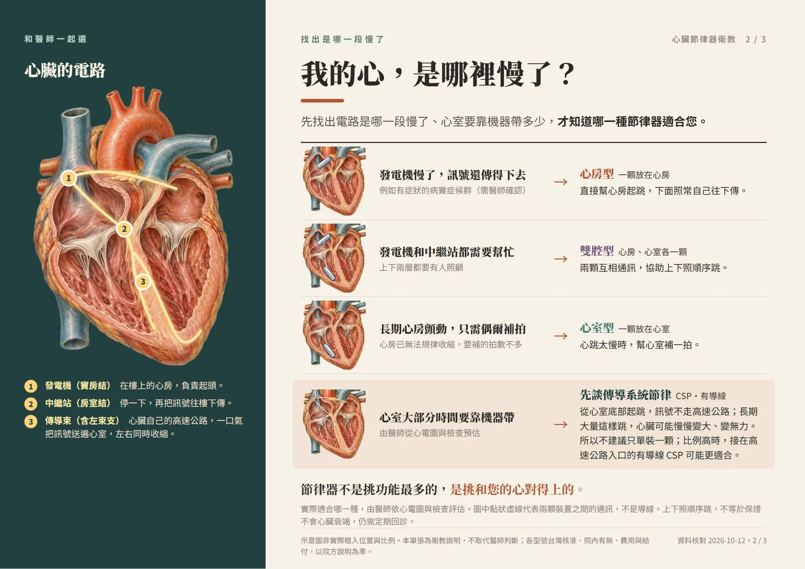
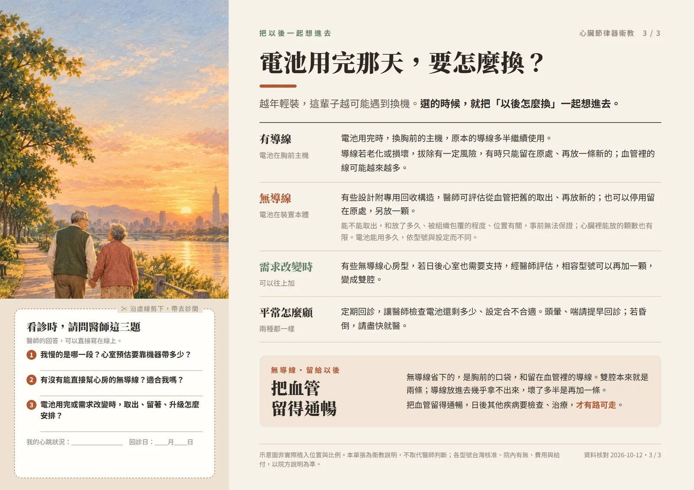

節律器衛教專區
心跳太慢、醫師建議裝節律器時，很多人第一個問題是：要裝哪一種？這裡用一支影片和三張圖解，把心臟的電路、節律器怎麼幫忙、有導線和無導線差在哪說清楚。

01先看影片，約 5 分鐘
從心臟的電路講起：正常的心跳怎麼傳、哪裡慢了會頭暈，節律器怎麼補上一拍，有導線和無導線各放在哪裡。有旁白和字幕。
02三張圖解，一次看一個問題
圖片點一下可以放大。想印給家人看，或看診時帶著問醫師，可以用下面的列印版。


03再往下讀

影片與圖解是示意，不是實際的植入位置與比例。適合哪一種節律器、在台灣的核准與給付，以醫師評估和醫院說明為準。
週二下午14:00–17:00週三上午09:00–12:00週四上午09:00–12:00週四夜診17:30–20:30
桃竹苗就近看診：#桃園#中壢#楊梅#新屋#龍潭#新竹市#竹北#竹東#湖口#新豐#寶山#芎林#竹南#頭份#苗栗